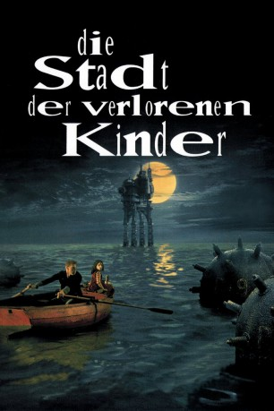

#8160 Die Stadt der verlorenen Kinder
Alternativ: The City of Lost Children (Englischer Titel)
 
 IMDB-Wertung: 7.6 / 10
IMDB-Wertung: 7.6 / 10  Metascore: 0
Metascore: 0 
Auf einer ausrangierten Plattform im Meer haust Krank mit seinen geklonten Brüdern, Mademoiselle Bismuth und Irvin, dem Gehirn. Krank altert rasend schnell, weil er nicht träumen kann. Unterstützt von den Zyklopen entführt er die Kinder aus der Hafenstadt, um sich ihre Träume einzuverleiben. Doch als er das Baby Denrée entführt, machen sich der unglaublich starke One und die neunjährige Miette auf die Suche. Ein utopisch-apokalyptisches Abenteuer jenseits aller Vorstellungskraft beginnt.
Jahr: 1995
Dauer: 112 Minuten
FSK: 12
Land: Frankreich Studio: Concorde-Castle Rock/TurnerTonspuren:
Untertitel: Deutsch, Englisch,
Auflösung: 1080p (1920x1040) Größe: 7546 MB
Genre: Sci-Fi, Fantasy
Regisseur: Marc Caro,  Jean-Pierre Jeunet
Jean-Pierre Jeunet
Drehbuch: Peter Silverman
Soundtrack: Angelo Badalamenti
Darsteller:
 Ron Perlman als One
Ron Perlman als One Dominique Pinon als Le scaphandrier / Les clones
Dominique Pinon als Le scaphandrier / Les clones Jean-Claude Dreyfus als Marcello
Jean-Claude Dreyfus als Marcello Rufus als Peeler
Rufus als Peeler Ticky Holgado als Ex-Acrobat
Ticky Holgado als Ex-Acrobat- François Hadji-Lazaro als Killer
 Jean-Louis Trintignant als L'oncle Irvin
Jean-Louis Trintignant als L'oncle Irvin- Lauren Geoffroy als Stripper
- Buster Verbraeken als Krank, Age 4
 Daniel Emilfork als Krank
Daniel Emilfork als Krank- Judith Vittet als Miette
- Geneviève Brunet als La Pieuvre
- Odile Mallet als La Pieuvre
- Mireille Mossé als Mademoiselle Bismuth
- Serge Merlin als Gabriel Marie (Cyclops Leader)
- Joseph Lucien als Denree
- Mapi Galán als Lune
- Briac Barthélémy als Bottle
- Pierre-Quentin Faesch als Pipo
- Alexis Pivot als Tadpole
- Léo Rubion als Jeannot
- Guillaume Billod-Morel als Child
- Dominique Bettenfeld als Bogdan
- Lotfi Yahya Jedidi als Melchior
- Thierry Gibault als Brutus
- Marc Caro als Brother Ange-Joseph
- Ham-Chau Luong als Tattoo Artist
- Bezak als Helmsman
- Hong Mai Thomas als Tattoo Artist's Wife
- René Pivot als Glazier
- Daniel Adric als Cyclops
- Christophe Salengro als Soldier
- Frankie Pain als Barmaid
- René Marquant als Captain
- Enrique Villanueva als Spainard
- Dominique Chevalier als Tied-Up Guard
- Cris Huerta als Father
- Lorella Cravotta als Woman at Her Window
- Michel Smolianoff als Awake Tramp
- Éric Houzelot als Soldier
- Lili Cognard als Winner
- Angélique Philibert als Stripper
- Marie Piémontèse als Stripper
- Antoinette Dias als Stripper
- Zak Russomanno als Stripper
- Djamila Bouda als Stripper
- Philippe Beautier als Double Clones
- Marc Amyot als Double Clones #2
- Jean-Philippe Labadie als Double Clones
- Cyril Aubin als Double Clones #4
Datei: X:\1995\Stadt der verlorenen Kinder, Die (1995, FSK12, 1920x1040).mkv seit 01.02.2018
Festplatte: HD 1992-1995
 Es gibt insgesamt 85 Filme in der Gruppe '1995'
Es gibt insgesamt 85 Filme in der Gruppe '1995'